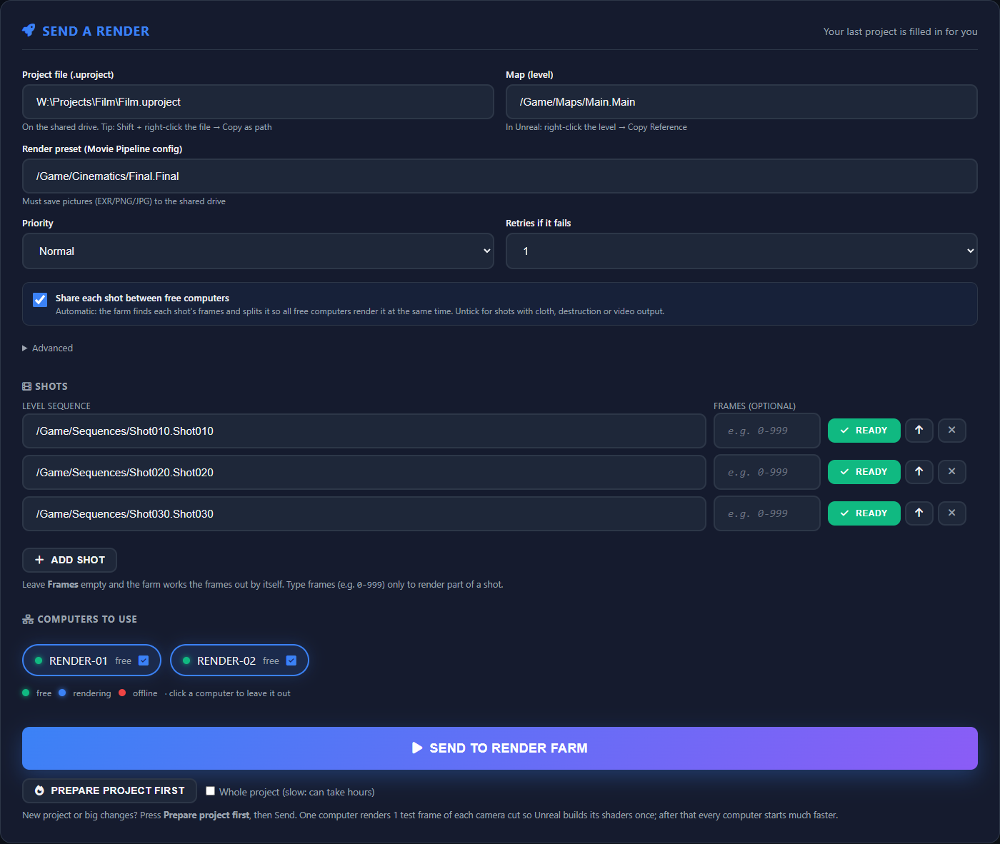
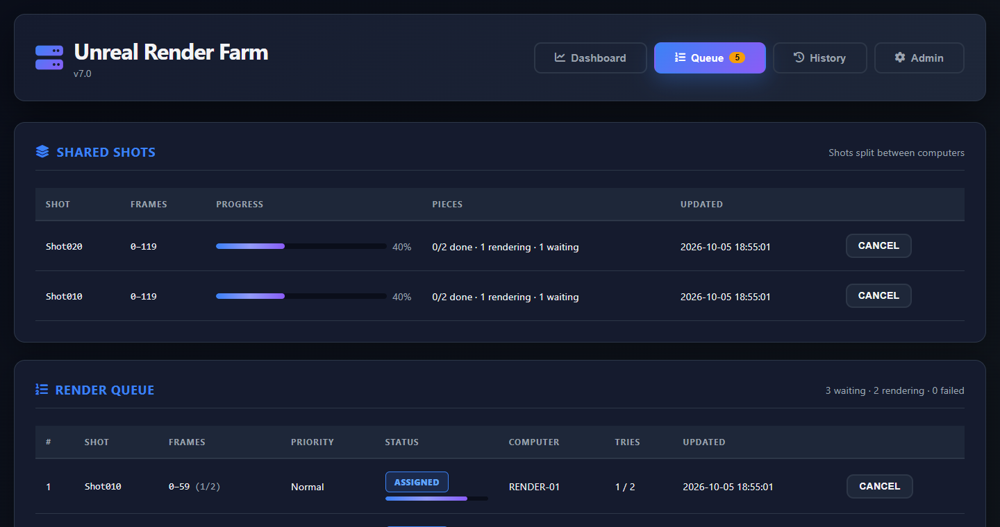

What it does
Shots split automatically
Tick one box: each shot is cut into one piece per free PC, on camera cuts where possible, and all render at the same time into one image sequence.
Live progress
See each PC's phase (loading, warming up, rendering), frame, percent and time left, plus CPU, GPU and memory.
Safe results
Every frame file is checked on the drive. Missing frames, crashes, freezes, network drops and out-of-memory errors retry by themselves.
Faster first loads
A shared Unreal cache and a "Prepare project" button build shaders once for the whole farm.
Artists' PCs help at night
Workstation mode renders only while nobody uses the PC and gives it back within seconds.
Easy to run
The master is one Docker container. Each render PC: copy a folder, double-click SETUP.bat.
What you need
| Part | Needs |
|---|---|
| Render PCs | Windows 10/11, Unreal Engine 5.6 installed, an NVIDIA RTX graphics card (8 GB+ recommended), access to your shared drive |
| Master (any always-on PC) | Docker Desktop (or Python 3.12 on Windows). 2 cores and 4 GB RAM are plenty |
| Your projects | On a shared network drive every render PC can open. The Unreal project needs the Python Editor Script Plugin enabled |
| Network | Your local network only. The master uses port 5000, render PCs port 5001 |
Get started in 4 steps
Download
Get the latest release from the Releases page (Source code zip) and unzip it on the PC that will be the master, or clone it:git clone https://github.com/f1hunterr/unreal-render-farm.git cd unreal-render-farmSet your farm's two passwords
Copy the settings template and put your own long secrets in it (never the example values):
Paste one result ascopy farm.env.example farm.env python -c "import secrets; print(secrets.token_urlsafe(32))"URF_FARM_TOKEN(shared by the master and all render PCs) and another asURF_DASH_PASSWORD(your dashboard login, useradmin).Start the master
Opendocker compose up -d --buildhttp://<this-pc>:5000in a browser. On Windows, allowcom.docker.backend.exeon TCP 5000 in the firewall so other PCs can reach it.Add render PCs
On the master, build the render PC package once. It contains your farm's token, so keep it private:
Copy.\deploy\build_agent_package.ps1dist\UnrealRenderFarm_agentto each render PC and double-clickSETUP.bat(orSETUP-WORKSTATION.baton an artist's PC). It installs everything it needs offline and the PC appears on the dashboard by itself.
Then open the dashboard, fill in Send a Render (project, map, render preset, shots) and press Send to Render Farm. For artists there is a simple step-by-step user guide. The full admin documentation is in the README.
A look inside


Good to know
Status
Young but working: used on a small Windows farm with UE 5.6 since October 2026. Expect rough edges and please report issues.
Local only
Everything runs on your own network. Nothing is sent to any cloud service.
Free and open
MIT licence. Use it, change it, share it. Contributions welcome.